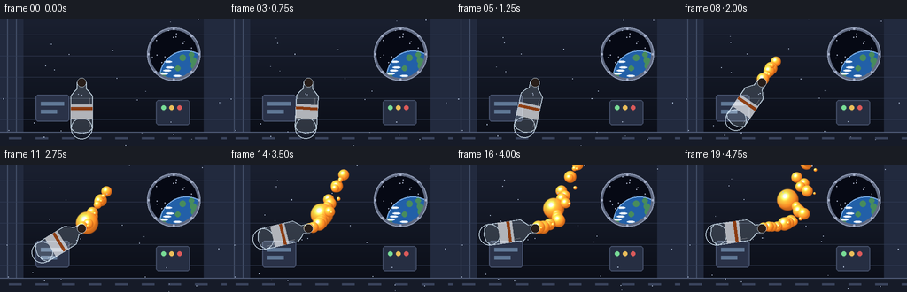
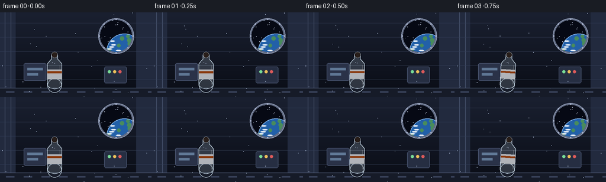

CODING AGENTS AS PIXEL WORLD MODELS
traex/Seed-2.1-Pro-0915 · phygen_003
点击播放 · 原生 RGB 像素
逐轮保存的候选
回放视频、检查图与代码变化。
每份候选均可单独播放。实际图片检查记录在下方工具轨迹中。
候选 01播放与检查图
点击播放 · 原生 RGB 像素


展开代码变化
--- 上一保存版本
+++ 本次保存版本
@@ -0,0 +1,377 @@
+"""
+Text-to-video generation: juice slowly poured out inside a space station.
+
+Microgravity physics (stylized, 2D):
+ * The bottle tilts from upright to nearly horizontal.
+ * Juice leaves the mouth and travels in a straight line along the mouth
+ axis (no gravity fall), pinching into glossy surface-tension spheres
+ that wobble and shed satellite droplets.
+ * The juice level inside the transparent bottle falls as liquid is emitted.
+
+Pure numpy + PIL rendering, supersampled 2x and downsampled for smooth edges.
+"""
+
+import math
+import numpy as np
+from PIL import Image, ImageDraw, ImageFilter
+
+import artifact_io
+
+# ---------------------------------------------------------------- constants
+W, H, N, FPS = 256, 144, 20, 4.0
+S = 2 # supersampling factor
+SW, SH = W * S, H * S
+rng = np.random.default_rng(7)
+
+JUICE_CORE = np.array([255, 178, 74], dtype=float)
+JUICE_MID = np.array([247, 132, 33], dtype=float)
+JUICE_RIM = np.array([158, 66, 14], dtype=float)
+
+
+# ------------------------------------------------------------- sprite cache
+def make_juice_sprite(size=96):
+ """Glossy translucent juice sphere with rim shading and specular spots."""
+ c = size / 2.0
+ y, x = np.mgrid[0:size, 0:size].astype(float)
+ dx, dy = (x - c) / c, (y - c) / c
+ rho2 = dx * dx + dy * dy
+ inside = rho2 <= 1.0
+ z = np.sqrt(np.clip(1.0 - rho2, 0, 1))
+
+ light = np.array([-0.45, -0.62, 0.64])
+ light /= np.linalg.norm(light)
+ view = np.array([0.0, 0.0, 1.0])
+ half = light + view
+ half /= np.linalg.norm(half)
+
+ diffuse = np.clip(dx * light[0] + dy * light[1] + z * light[2], 0, 1)
+ spec = np.clip(dx * half[0] + dy * half[1] + z * half[2], 0, 1) ** 28
+ spec2 = np.clip(dx * half[0] + dy * half[1] + z * half[2], 0, 1) ** 90
+
+ # body color: bright core toward deep orange rim
+ t = (1 - z) ** 1.3
+ col = JUICE_MID[None, None, :] * (1 - t[..., None]) + JUICE_RIM[None, None, :] * t[..., None]
+ col += JUICE_CORE[None, None, :] * (diffuse * 0.45)[..., None]
+ # transmitted glow on the lower-right side
+ glow = np.clip(-dx * 0.5 - dy * 0.5 + z * 0.4, 0, 1) ** 2
+ col += JUICE_CORE[None, None, :] * (glow * 0.35)[..., None]
+ col += np.array([255, 246, 220])[None, None, :] * (spec * 0.9 + spec2)[..., None]
+ col = np.clip(col, 0, 255)
+
+ alpha = np.zeros((size, size))
+ alpha[inside] = 238
+ edge = (rho2 > 0.82) & inside
+ alpha[edge] = (238 * (1 - rho2[edge]) / 0.18).astype(float)
+ # soft outer halo
+ halo = np.clip(1 - rho2, 0, 1) ** 3 * 26
+ alpha = np.clip(alpha + halo, 0, 255)
+
+ sprite = np.dstack([col, alpha]).astype(np.uint8)
+ return Image.fromarray(sprite, "RGBA")
+
+
+SPRITE = make_juice_sprite()
+_sprite_cache = {}
+
+
+def get_scaled_sprite(radius_px):
+ """radius_px is the sphere radius in supersampled pixels."""
+ d = max(4, int(round(radius_px * 2.35))) # sprite tile includes halo
+ d = min(d, 220)
+ if d not in _sprite_cache:
+ _sprite_cache[d] = SPRITE.resize((d, d), Image.LANCZOS)
+ return _sprite_cache[d], d
+
+
+# ------------------------------------------------------------- background
+def make_background():
+ """Dim space-station module interior with a porthole showing Earth."""
+ img = Image.new("RGBA", (SW, SH), (0, 0, 0, 255))
+ px = img.load()
+ top = np.array([26, 32, 48])
+ bot = np.array([10, 13, 22])
+ for yy in range(SH):
+ f = yy / SH
+ col = tuple((top * (1 - f) + bot * f).astype(int)) + (255,)
+ for xx in range(SW):
+ px[xx, yy] = col
+ d = ImageDraw.Draw(img, "RGBA")
+
+ # side wall panels
+ d.rectangle([0, 0, 26 * S, SH], fill=(34, 42, 62, 255))
+ d.rectangle([(W - 26) * S, 0, SW, SH], fill=(34, 42, 62, 255))
+ for gx in (8, 18):
+ d.line([gx * S, 0, gx * S, SH], fill=(70, 82, 108, 160), width=S)
+ for gy in range(18, H, 24):
+ d.line([0, gy * S, SW, gy * S], fill=(52, 62, 86, 120), width=max(1, S // 2))
+ # floor / deck strip
+ d.rectangle([0, (H - 16) * S, SW, SH], fill=(22, 27, 40, 255))
+ d.line([0, (H - 16) * S, SW, (H - 16) * S], fill=(86, 98, 126, 180), width=S)
+ for gx in range(10, W, 30):
+ d.rectangle([gx * S, (H - 10) * S, (gx + 14) * S, (H - 8) * S],
+ fill=(58, 68, 92, 200))
+
+ # equipment boxes on the rear wall
+ d.rounded_rectangle([40 * S, 86 * S, 78 * S, 116 * S], radius=3 * S,
+ fill=(42, 50, 72, 255), outline=(78, 90, 118, 200), width=S)
+ d.rectangle([46 * S, 94 * S, 72 * S, 98 * S], fill=(96, 120, 150, 160))
+ d.rectangle([46 * S, 103 * S, 64 * S, 107 * S], fill=(96, 120, 150, 120))
+ d.rounded_rectangle([176 * S, 92 * S, 214 * S, 120 * S], radius=3 * S,
+ fill=(38, 46, 66, 255), outline=(72, 84, 110, 200), width=S)
+ # small status lights
+ for i, c in enumerate([(120, 220, 150), (235, 190, 90), (220, 90, 90)]):
+ d.ellipse([(182 + i * 9) * S, 98 * S, (187 + i * 9) * S, 103 * S],
+ fill=c + (230,))
+
+ # porthole with Earth outside
+ pcx, pcy, pr = 196 * S, 40 * S, 27 * S
+ d.ellipse([pcx - pr - 3 * S, pcy - pr - 3 * S, pcx + pr + 3 * S, pcy + pr + 3 * S],
+ fill=(96, 106, 130, 255))
+ d.ellipse([pcx - pr - 3 * S, pcy - pr - 3 * S, pcx + pr + 3 * S, pcy + pr + 3 * S],
+ outline=(150, 162, 188, 255), width=S)
+ port = Image.new("RGBA", (pr * 2, pr * 2), (0, 0, 0, 0))
+ pd = ImageDraw.Draw(port)
+ pd.ellipse([0, 0, pr * 2 - 1, pr * 2 - 1], fill=(6, 9, 20, 255))
+ # stars
+ star_rng = np.random.default_rng(11)
+ for _ in range(34):
+ sx, sy = star_rng.integers(0, pr * 2, 2)
+ if (sx - pr) ** 2 + (sy - pr) ** 2 < pr ** 2:
+ pd.ellipse([sx, sy, sx + 2, sy + 2], fill=(220, 230, 255, 200))
+ # Earth limb
+ ecx, ecy, er = pr + 14 * S, pr + 26 * S, 30 * S
+ pd.ellipse([ecx - er, ecy - er, ecx + er, ecy + er], fill=(34, 96, 168, 255))
+ land_rng = np.random.default_rng(23)
+ for _ in range(9):
+ lx = ecx + land_rng.integers(-er, er)
+ ly = ecy + land_rng.integers(-er, er * 0.4)
+ if (lx - ecx) ** 2 + (ly - ecy) ** 2 < er ** 2:
+ rr = land_rng.integers(3 * S, 7 * S)
+ pd.ellipse([lx - rr, ly - rr, lx + rr, ly + rr], fill=(72, 140, 92, 220))
+ for _ in range(7):
+ lx = ecx + land_rng.integers(-er, er)
+ ly = ecy + land_rng.integers(-er, er * 0.4)
+ if (lx - ecx) ** 2 + (ly - ecy) ** 2 < er ** 2:
+ pd.ellipse([lx - 4 * S, ly - S, lx + 5 * S, ly + S],
+ fill=(235, 242, 250, 170))
+ # atmosphere rim
+ pd.ellipse([ecx - er, ecy - er, ecx + er, ecy + er],
+ outline=(140, 190, 245, 200), width=S)
+ mask = Image.new("L", (pr * 2, pr * 2), 0)
+ ImageDraw.Draw(mask).ellipse([0, 0, pr * 2 - 1, pr * 2 - 1], fill=255)
+ img.paste(port, (pcx - pr, pcy - pr), mask)
+ # rivets around the ring
+ for k in range(8):
+ a = k * math.pi / 4
+ rx, ry = pcx + math.cos(a) * (pr + 1.5 * S), pcy + math.sin(a) * (pr + 1.5 * S)
+ d.ellipse([rx - S, ry - S, rx + S, ry + S], fill=(170, 180, 205, 255))
+
+ return img.filter(ImageFilter.GaussianBlur(0.4))
+
+
+BG = make_background()
+
+
+# ------------------------------------------------------------- bottle
+# Local bottle geometry: mouth at (0,0), body extends along +x.
+BODY_POLY = [(0, -5), (7, -5), (10, -8), (15, -12), (52, -12),
+ (56, -8), (58, 0), (56, 8), (52, 12), (15, 12),
+ (10, 8), (7, 5), (0, 5)]
+
+
+def rot_matrix(beta_deg):
+ b = math.radians(beta_deg)
+ return np.array([[math.cos(b), -math.sin(b)],
+ [math.sin(b), math.cos(b)]])
+
+
+def draw_bottle(layer, pivot, beta, fill_fraction):
+ """Draw transparent bottle with juice inside; pivot is the mouth (2x)."""
+ R = rot_matrix(beta)
+ P = np.array(pivot, dtype=float)
+
+ def to_world(pts):
+ pts = np.atleast_2d(np.asarray(pts, dtype=float))
+ return [tuple(P + R @ p * S) for p in pts]
+
+ d = ImageDraw.Draw(layer, "RGBA")
+ body_world = to_world(BODY_POLY)
+
+ # clipping mask keeps juice inside the plastic body
+ mask = Image.new("L", (SW, SH), 0)
+ md = ImageDraw.Draw(mask)
+ md.polygon(body_world, fill=255)
+ bc0 = P + R @ np.array([52.0, 0.0]) * S
+ md.ellipse([bc0[0] - 13 * S, bc0[1] - 13 * S, bc0[0] + 13 * S, bc0[1] + 13 * S],
+ fill=255)
+
+ # juice inside, settled toward the bottle bottom (local +x)
+ x0, x1 = 15.0, 54.0
+ xs = x0 + (x1 - x0) * (1 - fill_fraction)
+ half = 12.0 if xs >= 15 else (5 + (xs - 7) / 8 * 7)
+ juice_local = [(xs, -half), (52, -12), (56, -8), (58, 0), (56, 8),
+ (52, 12), (xs, half)]
+ juice_layer = Image.new("RGBA", (SW, SH), (0, 0, 0, 0))
+ jd = ImageDraw.Draw(juice_layer)
+ jd.polygon(to_world(juice_local), fill=tuple(JUICE_MID.astype(int)) + (235,))
+ # meniscus at the free surface
+ men_center = P + R @ np.array([xs, 0]) * S
+ axis = R[:, 0] * S
+ perp = R[:, 1] * S
+ m_pts = [tuple(men_center + perp * half), tuple(men_center - perp * half),
+ tuple(men_center - perp * half + axis * 3),
+ tuple(men_center + perp * half + axis * 3)]
+ jd.polygon(m_pts, fill=tuple(JUICE_CORE.astype(int)) + (180,))
+ layer.paste(juice_layer, (0, 0), mask)
+
+ # plastic shell
+ d.polygon(body_world, fill=(205, 225, 240, 46), outline=(214, 232, 246, 210))
+ d.line(body_world + [body_world[0]], fill=(214, 232, 246, 210), width=S)
+ # bottom rounding
+ d.ellipse([bc0[0] - 12 * S, bc0[1] - 12 * S, bc0[0] + 12 * S, bc0[1] + 12 * S],
+ outline=(214, 232, 246, 210), width=S)
+ # glossy highlight streak along the upper flank
+ streak_local = [(18, -9), (50, -9)]
+ d.line(to_world(streak_local), fill=(255, 255, 255, 120), width=max(1, S // 2))
+ # paper label
+ label_local = [(25, -12), (41, -12), (41, 12), (25, 12)]
+ d.polygon(to_world(label_local), fill=(238, 240, 244, 185))
+ stripe_local = [(28, -12), (31, -12), (31, 12), (28, 12)]
+ d.polygon(to_world(stripe_local), fill=tuple(JUICE_RIM.astype(int)) + (220,))
+ # open mouth: dark ellipse plus rim ring
+ mc = P
+ d.ellipse([mc[0] - 5 * S, mc[1] - 5 * S, mc[0] + 5 * S, mc[1] + 5 * S],
+ fill=(40, 30, 26, 255), outline=(214, 232, 246, 230), width=max(1, S // 2))
+
+
+# ------------------------------------------------------------- particles
+class Blob:
+ def __init__(self, t, radius, speed, direction, perp_jitter, big=False):
+ self.t0 = t
+ self.r = radius
+ self.speed = speed
+ self.d = direction
+ self.jit = perp_jitter
+ self.phase = rng.uniform(0, math.tau)
+ self.wobble = rng.uniform(1.8, 2.8)
+ self.big = big
+
+ def render(self, layer, t, mouth):
+ age = t - self.t0
+ if age < 0:
+ return
+ along = self.speed * age
+ perp = self.jit * math.sin(age * 2.2 + self.phase) + self.jit * 0.4 * age
+ pos = mouth + self.d * along + np.array([-self.d[1], self.d[0]]) * perp
+ # capillary surface wobble
+ wob = 1.0 + 0.08 * math.sin(age * self.wobble * math.tau + self.phase)
+ r = self.r * wob * S
+ sprite, dsize = get_scaled_sprite(r)
+ x, y = pos[0] * S, pos[1] * S
+ # fade near the right edge
+ fade = 1.0
+ if pos[0] > W - 26:
+ fade = max(0.0, (W - pos[0]) / 26)
+ if fade <= 0.02:
+ return
+ if fade < 1:
+ sprite = sprite.copy()
+ a = sprite.split()[3].point(lambda v: int(v * fade))
+ sprite.putalpha(a)
+ layer.alpha_composite(sprite, (int(x - dsize / 2), int(y - dsize / 2)))
+
+
+def smoothstep(a, b, x):
+ u = np.clip((x - a) / (b - a), 0, 1)
+ return u * u * (3 - 2 * u)
+
+
+# ------------------------------------------------------------- main render
+def render():
+ frames = []
+ mouth0 = np.array([92.0, 72.0]) # 1x coordinates of the mouth pivot
+ blobs = []
+ next_med = 1.05
+ next_small = 1.25
+ big_spawned = False
+ emitted_volume = 0.0
+
+ # faint floating cabin dust
+ dust = []
+ for _ in range(26):
+ dust.append([rng.uniform(0, W), rng.uniform(0, H),
+ rng.uniform(-2.5, 2.5), rng.uniform(-1.6, 1.6),
+ rng.uniform(0.6, 1.6)])
+
+ for fi in range(N):
+ t = fi / FPS
+ frame = BG.copy()
+
+ # bottle tilt: upright (beta=90, body down) -> nearly horizontal (172)
+ beta = 90 + 82 * smoothstep(0.3, 4.1, t)
+ R = rot_matrix(beta)
+ d_axis = -R[:, 0] # direction liquid exits the mouth
+ mouth = mouth0.copy()
+
+ # emission schedule (starts once the bottle tilts past ~118 deg)
+ emitting = beta > 118
+ if emitting:
+ while next_med <= t:
+ speed = rng.uniform(22, 30)
+ blobs.append(Blob(next_med, rng.uniform(4.0, 6.5), speed,
+ d_axis, rng.uniform(-1.6, 1.6)))
+ emitted_volume += 1.0
+ next_med += 0.2
+ while next_small <= t:
+ blobs.append(Blob(next_small, rng.uniform(1.4, 2.4),
+ rng.uniform(26, 36), d_axis,
+ rng.uniform(-3.0, 3.0)))
+ next_small += 0.42
+ if not big_spawned and t >= 2.15:
+ blobs.append(Blob(t, 10.5, 17.5, d_axis, 0.8, big=True))
+ emitted_volume += 4.0
+ big_spawned = True
+
+ # liquid layer (behind bottle mouth highlight, in front of cabin)
+ liquid = Image.new("RGBA", (SW, SH), (0, 0, 0, 0))
+
+ # short connected stream right at the mouth while pouring
+ if emitting:
+ stream_len = 13
+ for k in range(7):
+ frac = k / 6
+ c = mouth + d_axis * (stream_len * frac)
+ r = (3.2 * (1 - frac) + 1.2) * (1 + 0.12 * math.sin(t * 9 + k))
+ sprite, dsize = get_scaled_sprite(r * S)
+ liquid.alpha_composite(sprite,
+ (int(c[0] * S - dsize / 2), int(c[1] * S - dsize / 2)))
+
+ for b in blobs:
+ b.render(liquid, t, mouth)
+ frame.alpha_composite(liquid)
+
+ # bottle on top, so the stream appears to leave from behind the mouth
+ bottle = Image.new("RGBA", (SW, SH), (0, 0, 0, 0))
+ fill = float(np.clip(0.86 - 0.045 * emitted_volume, 0.3, 0.86))
+ draw_bottle(bottle, mouth0 * S, beta, fill)
+ frame.alpha_composite(bottle)
+
+ # drifting dust motes
+ dd = ImageDraw.Draw(frame, "RGBA")
+ for mx, my, vx, vy, sz in dust:
+ px = (mx + vx * t) % W
+ py = (my + vy * t) % H
+ dd.ellipse([px * S, py * S, px * S + sz, py * S + sz],
+ fill=(180, 195, 220, 70))
+
+ rgb = frame.convert("RGB").resize((W, H), Image.LANCZOS)
+ frames.append(np.asarray(rgb, dtype=np.uint8))
+
+ return np.stack(frames)
+
+
+if __name__ == "__main__":
+ frames = render()
+ assert frames.shape == (N, H, W, 3) and frames.dtype == np.uint8
+ artifact_io.save(frames, ".")
+ print("saved", frames.shape)
可观测工具轨迹
实际执行的命令与返回图片。
命令 1exit 0
/bin/bash -lc 'cat prompt.txt; echo "---"; cat GENERATION_RULES.md; echo "---"; cat task_spec.json'
命令 2exit 0
/bin/bash -lc 'ls -la; python -c "import artifact_io; print(artifact_io.__file__)" 2>&1; python -c "import numpy, PIL; print(numpy.__version__, PIL.__version__)"'
命令 3exit 0
/bin/bash -lc 'cat artifact_io.py'
命令 4exit 0
/bin/bash -lc 'cd . && time python generate.py'
保存候选 1 份；完成命令 4 次；可验证图片返回 0 张。原始 API 响应与完整日志保留在本地。